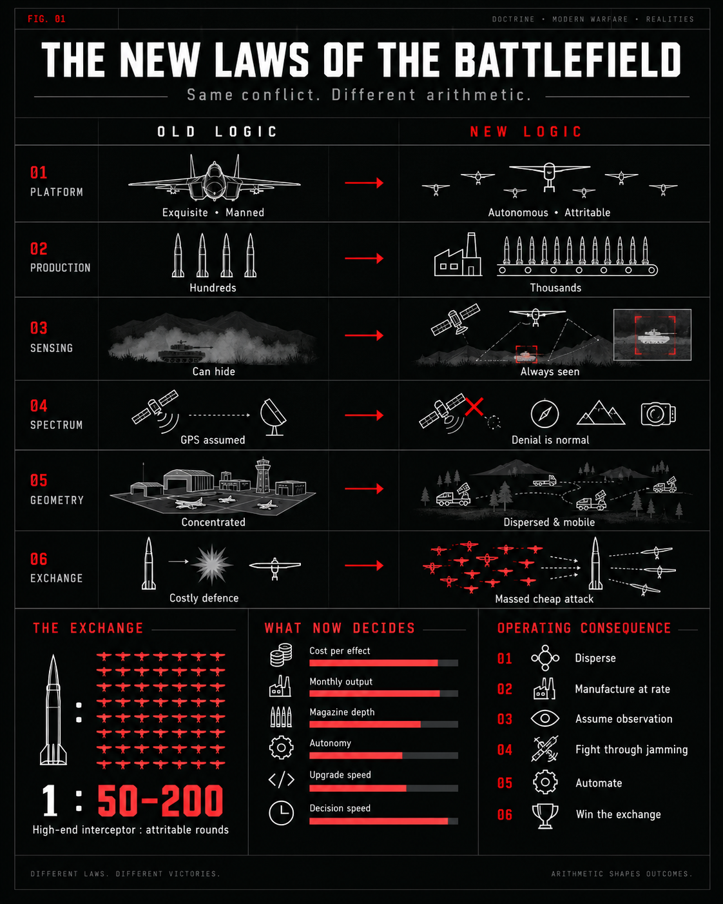

An Indian neo-prime, built from the bottom up
How we started
Apollyon Dynamics started in May 2025 at BITS Pilani, Hyderabad. While the two founders were still undergraduates, they built their first tactical quadcopter in their hostel rooms using 3D printers.
The first drones were designed and built in-house. The team took them to Chandigarh for flight trials with the Indian Army, where their flight performance and resistance to jamming helped secure the company's first order. That order came from 15 Guards and was worth ₹2.68 lakh. Within two months of incorporation, Apollyon had delivered its first production hardware to a forward unit.
More orders and deployments followed across Jammu, Udhampur, Chandimandir and Arunachal Pradesh. Working with Army units from the beginning gave the team a chance to test its designs in the field, understand what soldiers actually needed, and use that feedback in subsequent builds.
The team has since grown beyond the original hostel room, from nine people at the start of 2026 to twenty today. The way of working has remained much the same: build, fly, learn from the results, and improve the next version. The people behind the programmes →
Precision is mercy
A defence company should be comfortable with the fact that its products are lethal weapons. They are built to destroy military capability. A system that cannot do this reliably is a weak instrument of deterrence. Lethality, therefore, matters in the most literal sense. Apollyon intends to build highly lethal weapons, making it prohibitively costly to wage war against India.
The ethical question begins after accepting that fact: how should destructive force be designed and employed by a state that claims restraint as a virtue? Our answer is contained in one of the company's simplest yet defining phrases: Precision is Mercy. Precision in striking a legitimate military target is an act of mercy toward the civilian population. Destructive capacity by itself is a poor measure of military quality; the higher standard is discriminate force: the ability to produce the required military effect against the intended target while minimising incidental harm, unnecessary destruction and risk to those who are not direct part of the conflict.
Lethality and precision therefore belong together. Lethality provides certainty of military effect; precision confines that effect to where it is intended. The desired weapon is one that maximises the probability of achieving the legitimate military objective while minimising consequences beyond it. This certainty is what upholds unassailable deterrence.
क्षमा शोभती उस भुजंग को, जिसके पास गरल हो
उसको क्या जो दंतहीन, विषरहित, विनीत, सरल हो। Ramdhari Singh 'Dinkar'
Restraint has value only when a state possesses alternatives. A country that cannot impose costs upon the aggressor can maintain peace only as an act of mercy of the aggressor. Only a country with overwhelming military power can choose not to escalate. In a democratic and plural state, the purpose of military power is neither conquest nor violence as an expression of national will. Its purpose is to make coercion unprofitable, to protect political independence, and to give the state enough freedom of action that diplomacy, restraint and peaceful settlement remain genuine choices rather than being necessitated by weakness.
Precision is Mercy
Lethality and precision belong together. Force without precision is barbarism; restraint without lethality is impotence. Discrimination confines destruction to legitimate military targets, protecting non-combatants and making aggression prohibitively costly.
The New Arsenal
An arsenal is an industrial state. The decisive weapon in long wars is not the peacetime stockpile, but the factory floor that replenishes it. Sovereign strategic autonomy requires domestic manufacturing depth, software independence, and institutional accumulation.
The Missing Middle
India is not missing technology. It is missing an industrial tempo. Between exquisite strategic weapons and mature ordnance commodities sits the unbuilt layer: high-tech, software-defined, attritable mass iterated in weeks and built at high rate.
Modern warfare has changed
Cheap drones, better sensors, electronic warfare and mass production have changed how wars are fought. A military now needs not only capable weapons, but enough of them to sustain a long conflict.

The important change is not that expensive weapons are becoming obsolete. It is that they can no longer do everything. A cheap drone can force an expensive response, while a small number of sophisticated weapons cannot deal with every threat. Modern armies need both: advanced systems for difficult targets and cheaper systems that can be built and used in large numbers. Apart from this, all the conventional ways of navigation are becoming increasingly unreliable, as satellite navigation and communications are commonly disrupted in light of conflict.
The goal is simple: build weapons that work effectively and decisively in these conditions, can be produced in sufficient numbers, and are affordable enough to use when needed.
Eight decades of strategic dependency (1947–2026)
Military equipment is bought with the expectation that it will work when needed. But its effectiveness depends on much more than the equipment itself. Spare parts, ammunition, maintenance, software and technical support must all remain available throughout a conflict.
Dependence on foreign suppliers puts this battle-readiness completely outside a country's control. An aircraft may be perfectly capable to fly, but without the parts or weapons it needs, it cannot perform its intended role. What appears to be a complete military capability in peacetime can become unavailable precisely when it is needed most.
The following timeline shows how dependence on foreign suppliers has repeatedly jeopardized the sovereignty and effectiveness of Indian military action since independence.
Taken from primary documentation like declassified diplomatic cables and Standing Committee on Defence parliamentary reports. Read the full record here.
India's defence market turned inward
India has structurally redirected its defence procurement toward domestic manufacturing. Between FY14 and FY26, domestic defence output expanded 4-fold to ₹1.78 lakh crore, while military exports increased 56-fold to ₹38,424 crore. Statutory procurement mandates now guarantee domestic volume for aerospace and missile manufacturing.
Production, FY21–FY26. Source: Ministry of Defence / PIB releases.
Exports, FY14–FY26. Source: Ministry of Defence / PIB releases.
- Statutory capital reservation. The Ministry of Defence reserves 75% of its capital procurement budget—amounting to ₹1.39 lakh crore in FY27—for domestic manufacturers. Positive Indigenisation Lists embargo 5,521 imported subsystems and items, while updated procurement procedures dissolved historical public monopolies in tactical missile fabrication.
- Sustained attrition requirements. Active operational deployments across the Himalayan Line of Actual Control, the Line of Control, and maritime sea lanes consume ordnance faster than overseas supply lines can replenish. High-intensity multi-front operations require high-rate domestic production lines rather than fixed stocks of imported munitions.
- Independent export demand & geopolitical asymmetry. Many countries face high costs and restrictions when buying foreign defence equipment. India offers an alternative, and Apollyon has an additional advantage through its partnership with Tonbo Imaging. Tonbo's existing international customers, industry relationships and export experience give Apollyon a starting point in markets it would otherwise have to enter on its own. Read more about the Tonbo Advantage →
Strike per rupee
Apollyon sells machines, but the strategy underneath them is bigger: bring down what India pays for long-range strike, and establish the sovereign autonomy and production architecture to keep driving down the cost of delivered effect across an expanding spectrum of autonomous systems. Today's jet-powered effectors, cruise missiles, and interceptors are the initial platforms, in fact the entry wedges into a scalable, multi-domain arsenal that keeps diversifying as per needs, while compounding cost advantages generation after generation.
The unit we count in
Comparing weapons by unit price or range alone obscures delivered effect. A commander buys warhead mass delivered across distance. Combining payload and range yields total delivered strike work:
Normalizes tactical loitering munitions and heavy cruise missiles onto a single capital-efficiency axis.
Two rules qualify this metric: the airframe must clear electronic-warfare and autonomous terminal accuracy gates, and survivability assumes subsonic terrain masking and route planning.
What a rupee buys
Divide a round's price by its envelope and you have the price of delivered effect. A Nightshade Mk II carries 15 kg over 300 km for a planning price near ₹1.5 crore, which works out to about ₹3,000 for every kilogram-kilometre. The Hemlock Mk II is specified at 1,000 kg over 1,500 km for roughly ₹5.2 crore, or about ₹35. Between the two, the envelope grows by more than 300 times while the price of each kilogram-kilometre falls by roughly 95 times.
Why the curve falls
Every platform in the family runs the same guidance core: multiband GNSS with CRPA anti-jam, inertial navigation, seeker integration through Tonbo, electronic-warfare hardening, and the process IP that qualifies all of it. Nightshade Mk II, Nightshade Mk III and the Hemlock family share one codebase. A new airframe is mostly an integration job covering engine class, structure, launch mode and warhead, and the qualification evidence from the previous machine travels with it.
| Generation | Inherits | Pays only the delta |
|---|---|---|
| Nightshade Mk I | — · proof of concept | Airframe, first engine integration, GNSS-only navigation |
| Nightshade Mk II | Navigation, estimation, control, software | Airframe scale, launch system, seeker integration |
| Nightshade Mk III | Mk II core and its qualification evidence | Larger structure, rocket-assisted launch, more fuel |
| Hemlock Mk I | Full core and evidence package | Cruise airframe, booster launch, heavier warhead |
| Hemlock Mk II | Hemlock Mk I core and evidence | Terrain-following layer, heavy warhead, long-range structure |
This is where legacy cruise missile costs come from: proprietary radar altimeters, hand-tuned optical correlators, military-specification inertial platforms, and a decade of qualification spent on each of them. The family leaves that hardware behind. Software on automotive-grade processors does the same work, and the structures are designed for India's composite and stamped-metal base. The full arithmetic, and the salvo model that follows from it →
Why the speed repeats
Engineering velocity must be a structural property of the development pipeline and organisation and not a transient artifact of early-stage size. At Apollyon, engineering compounds by design: modularity and reusability ensure that every validated subsystem becomes a permanent baseline, and new systems inherit the same. While more capable platforms demand more advanced subsystems, a disciplined modular architecture leads to a high reuse percentage across generations. Each successive platform advances the performance frontier by engineering only its capability delta—making rapid cadence the direct result of sound engineering at every stage.
The core engineering challenge
High-speed autonomous flight breaks standard aerospace assumptions across four physical regimes:
| Bottleneck | The Physical Barrier | Apollyon Architectural Solution |
|---|---|---|
| 01 · Coupling Recertification trap |
Changing airframe geometry or engines traditionally forces multi-year recertification of navigation filters and control laws. | Invariant flight core: Aerodynamics and mass properties load dynamically from calibrated tables at boot. Expanding the fleet requires parameter identification, not firmware rewrites. |
| 02 · Saturated Boundary Non-linear limit |
At 250–400 m/s, control surfaces hit mechanical deflection rails under severe cross-axis coupling; classical cascaded PID loops diverge. | Hybrid synthesis: Guaranteed classical stability margins across nominal envelope, paired with adaptive policies for boundary non-linearities. |
| 03 · Latency as Geometry Compute as distance |
At high closing velocity, a 5-millisecond compute jitter or bus delay equals 1–2 metres of miss distance—the margin between kill and miss. | Bare-metal determinism: Designed strictly for Worst-Case Execution Time (WCET) on isolated real-time cores with zero-copy DMA paths. |
| 04 · The Reality Gap Simulation limits |
High-altitude mountain turbulence, transonic buffet, and active EW cannot be modeled accurately from CAD or textbook CFD. | Empirical telemetry loop: In-house 6-DOF digital twin inverts real flight residuals into model updates within hours, permanently hardening the sovereign core. |
The shared architecture, in full — the machine, the twin, and the loop →
What we build, and what each system is for
Three platform classes, one accumulating core. Long-range strike and tactical interception are in the line today; the Hemlock deep-strike cruise missile family is next.
| Class | Problem it answers | Systems | Status |
|---|---|---|---|
| A · Long-range strike | Deliver precise, survivable effect at operational and strategic depth in salvo quantities a real campaign consumes. | Nightshade family (One-Way Effector / Target Drone / Decoy), Hemlock family | Nightshade in the line · Hemlock in design |
| B · Air defence / cUAS | Deny hostile reconnaissance drones and loitering munitions a hard kill at a cost that makes firing the round rational. | Ahuti family | Ahuti Mk II flying · record holder |
| C · Maritime | Attritable maritime strike and dual-use coastal surveillance from one hull. | Piranha USV | Sea trials planned this year |
The jet-powered one-way effector bridging attritable autonomous aircraft and tactical cruise missiles. Cruising at 700 km/h with an operational range of 300 km and a 15 kg warhead, the airframe supports swappable dual-band EO/IR and passive anti-radiation seekers. One airframe, three roles: one-way effector, target drone and decoy. The training configuration provides recurring revenue and operational flight hours on identical tooling.
Long-range strike cruise missile family designed for high-rate domestic fabrication. Mk I provides a 1,000 km range with a 75 kg warhead; Mk II expands coverage to 1,500 km carrying a 1,000 kg payload class with terrain-following guidance. This platform reaches the family's cost floor of ₹35 per kg·km.
A 3 kg high-speed multirotor interceptor targeting the 400 km/h operational band (derived from a 498 km/h developmental sprint testbed certified by the India Book of Records). Designed to defeat fast loitering munitions, Ahuti employs radar-cued initial midcourse guidance, autonomous onboard optical terminal tracking, and direct kinetic impact.
A low-observable autonomous surface vessel configured for maritime interdiction, port protection, and coastal surveillance. The hull integrates the shared sovereign navigation and guidance stack to deliver persistent perimeter surveillance and attritable kinetic strike without risking naval personnel.
All airframes share the identical flight software, state estimation pipeline, and navigation core, allowing engineering advances in one vehicle to transfer immediately across the line. The maritime strike USV applies this same modular design philosophy to surface interdiction. See the shared core →
Revenue now, compounding capability later
Strategic cruise missile tenders require 4–6 years of capital gestation under DAP 2020. Apollyon inverts this trap: selling high-rate tactical interceptors (Ahuti) and aerial targets (Nightshade) directly through Delegated Revenue budgets (DFPDS) compresses procurement to 6–12 months. Frontline demand for thousands of consumable rounds generates immediate operating cash flow, self-funding sovereign deep-strike development without dilutive equity dependency.
Cash engines underwriting deep strike
Bought in volume directly by frontline units under fast-track revenue budgets. High-cadence consumable demand converts immediately into operating cash.
Sells into recurring air-defence live-fire training budgets. Keeps assembly lines active and logs thousands of flight hours on shared software and hardware.
Commercial surveillance and coastal patrol contracts amortize hull tooling and maritime navigation before naval strike variants enter service.
Inherits the software core, avionics, and supplier base already flight-proven and paid for by serial tactical production—zero equity dilution, zero waiting on capital tenders.
Industrial depth and balance-sheet sovereignty
High-rate production of Ahuti and Nightshade matures the factory floor early: qualifying domestic suppliers for micro-turbines and high-RPM brushless motors, automating composite vacuum-infusion, standardizing wiring harnesses, and enforcing aerospace QA at volume. Concurrently, thousands of live operational sorties generate empirical telemetry that hardens the shared state estimation and flight control kernels. Operating cash flow eliminates dependency on binary capital tenders, providing the financial runway to build India’s sovereign deep-strike arsenal.
Go-to-market as a moat
Apollyon establishes customer relationships across multiple defence channels simultaneously, accelerating adoption across services:
| Channel | What it is | What it brings |
|---|---|---|
| Tonbo Imaging | Strategic mentor company & seeker partner | Supplies the TRAP-1 dual-band EO/IR seeker closing terminal guidance without RF; joint displays at North Tech Symposium (SharkJet) and Eurosatory 2026; provides an established export corridor into neutral and non-aligned markets (Armenia, South America, North Africa) honed across 15+ years and 24+ destination countries. |
| Indian Army units | Direct field relationships across 8 formations | Requirements observed directly at the tactical edge; forward trials and testing maintain ongoing engineering and operational feedback between major acquisition cycles. |
| BSF and paramilitary | MoU signed December 2025 | Border-security procurement for interceptors and tactical reconnaissance; provides an independent customer base outside tri-service acquisition timelines. |
| DKS / Make-II | Army air-defence interceptor programme with DGAAD and Raphe mPhibr | A live cUAS requirement with an integrator consortium, hitting exactly the Ahuti's role. |
| AADC training link | Target-drone channel into air-defence training | Recurring target-drone demand that doubles as product demonstration for the effector. |
| Export shows | Eurosatory 2026 · Marrakech Air Show, 7–10 October 2026 | Sovereign buyers who cannot buy American or Chinese; an Indian line with no ITAR tail is a third option. |
Commercial detail — pricing structures, competitive positioning against each comparator set, and the supply-chain posture — sits in the competitive field and the supply chain.
Every programme builds the next
A product is temporary. The engineering system, the supplier network and the route to market remain after the machine is delivered. Each programme lowers the cost and time required to build the next one, and widens the set of customers who can buy it.
These four numbers are what compounding means here. They are tracked per generation.
01The engineering loop
Speed is easiest to check in hardware. Five flight standards of the Ahuti interceptor were built, flown and measured inside eight months.
What remains after each build
Build 5 is not merely better than Build 1. It inherits four earlier airframes' flight data, failed parts, control tuning, supplier knowledge and test infrastructure. That inheritance is the moat, and the previous programme paid for it.
Nightshade · second proof, layout to vehicle launch
02The industrial loop
Own the architecture. Secure the bottlenecks.
Apollyon does not need to make every component. It needs privileged access to the difficult ones while it keeps ownership of the system architecture that ties them together.
03One partnership, three forms of leverage
Tonbo Imaging has supplied defence customers for more than fifteen years across twenty-four markets. The relationship with Apollyon covers more than a seeker.
Dual-band EO/IR at the terminal end of guidance. Uncooled thermal and visible channels built for production volume.
Indian manufacturing, qualification paperwork and volume experience on defence optics.
Existing defence customers, export compliance experience, working relationships with international primes.
The value of the relationship is larger than the seeker. It shortens three difficult paths at once: subsystem development, industrialisation and entry into foreign markets.
04The distribution loop
The provenance of a weapon decides who can buy it. Weapons carry the foreign policy of the country that made them.
| Supply origin | Typical constraint |
|---|---|
| United States · Western systems | Export licensing, ITAR and foreign military sales review, end-use restrictions |
| Russia | Sanctions exposure, banking and supply-chain restrictions |
| Ukraine | Wartime domestic demand, constrained export availability |
| India | Government actively expanding defence exports; broad diplomatic relationships across Asia, Africa, the Middle East and Latin America |
Western systems carry ITAR export vetoes and Russian systems face sanctions; Apollyon's sovereign, non-ITAR architecture gives unencumbered export access across 80+ friendly nations. This insulates our balance sheet against single-buyer monopsony by balancing three independent demand pillars: domestic Tri-Services, foreign exports, and civil critical infrastructure. In turn, export and commercial volumes amortize R&D and tooling, continuously driving down unit strike costs for the Indian Armed Forces.
Anchored by the ring-fenced ₹1.39 lakh crore domestic capital procurement budget. Serves as our primary operational proving ground, doctrinal anchor, and high-altitude baseline validator.
80+ friendly destination countries across Asia, the Middle East, Africa, and Latin America. Offers sovereign customers a strike and interceptor inventory free of Western or Russian export vetoes.
Private and public operators of oil refineries, pipeline hubs, power grids, commercial seaports, and semiconductor facilities directly procuring autonomous interceptors (Ahuti) to neutralize drone incursions without MoD red tape.
05Sovereignty, layer by layer
Each layer of the vehicle has a control model: owned outright, made in India, dual-sourced, or globally replaceable. The map is built so that no single foreign supplier holds a veto over the fleet.
| Layer | Control model |
|---|---|
| Guidance algorithms | Owned |
| Flight software | Owned |
| Vehicle architecture | Owned |
| Composite structure | Owned |
| EO/IR seeker | Strategic Indian partner |
| Propulsion | Domestic + alternative source |
| INS / GNSS | Dual-source |
| RF electronics | Dual-source |
| Commodity compute | Globally replaceable |
06Where Apollyon is trying to sit
07Proof in products
Interceptor
| Parameter | Ahuti Mk II | Osiris UEB-1 |
|---|---|---|
| Top speed | 400 km/h band (498 km/h sprint testbed) | 315 km/h |
| Warhead | 3 kg | 3.1 kg |
| Range | ~10 km | 18 km LOS |
| Origin | India | Ukraine / Poland |
Ahuti optimises speed and terminal interception in the 400 km/h band. Osiris trades speed for range and endurance.
Jet effector
| System | Speed | Payload | Range | Seeker | Export |
|---|---|---|---|---|---|
| Nightshade Mk II One-Way Effector / Target Drone / Decoy | 700 km/h | 15 kg | 300 km | TRAP-1 EO/IR | India · non-ITAR |
| Barracuda-250 | 926 km/h | 15.9 kg | 370 km | Unconfirmed | US · ITAR |
| Geran-4 | 300–400 km/h | 50 kg | 450 km | None documented | Sanctions-blocked |
| Peklo | 700 km/h | 23 kg | 700 km | None documented | Ukrainian controls |
Full matrices, provenance markers and the three strategic reads sit in the competitive field.
What we have done
Progress is documented through instrumented flight trials, field deployment acceptance, and verified hardware production. The following operational milestones trace the transition from academic research to military field trials.


Working with us
For flight evaluation requests, operational field trials, integration partnerships, or investor diligence, consult the direct registry on the company directory. The technical and economic analyses in this wiki—covering system architecture, cost trajectory, competitive benchmarks, supply chain posture, and the sovereign dependency record—provide complete diligence verification directly from primary engineering documentation.